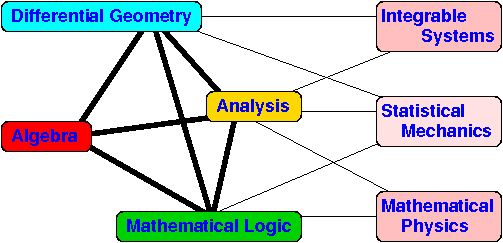

Paul Martin Home
LaTeX
macros (to do)
Starting a paper
I have some vanilla latex files with no content, but which set things
up in a tolerable way (note that all my stuff uses emacs folding mode,
but this is TeX-neutral so you can ignore it):
Basic:
useme.tex
A wrapper that includes stuff:
generic.tex
All these files call macro files such as:
martinew.tex
martin07.tex
And bibtex files such as:
new31.bib
